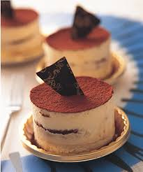

而在義大利原文裏，「Tira」是「提、拉」的意思，「Mi」是「我」，「sù」是「往上」
合起來就是「拉我起來」的意思，另一種解釋是「帶我走」，帶走的不只是美味，還有愛和幸福。
「帶我走」（pick-me-up）之說指涉配方中含咖啡因的濃縮咖啡與可可共振帶來的輕量興奮作用。
這一甜點自1980年代中期走紅，今日，世界各地的各色高檔餐館都可能供應此甜點，而不為意式餐館所專供。
它的配方中最具創新意義的是咖啡風味的起司奶蛋液，這一新口味亦為蛋糕、布丁等其它形式的冷熱甜點所吸收。